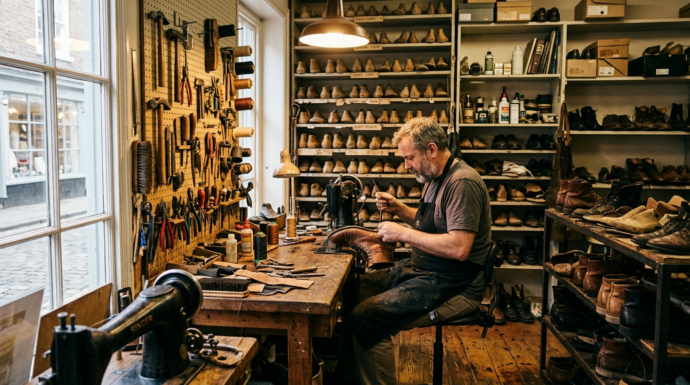

How It Began
Our Story
SoleCraft opened in 2009 with a simple idea: that quality shoes deserve proper repair, and that customers deserve honest advice about what is and is not possible. We started as a small bench operation with a handful of tools and a clear commitment to doing the work properly.
Over fifteen years, the workshop has grown — in equipment, in skill range and in the breadth of repairs we perform. But the approach has not changed. Every pair that arrives gets assessed honestly. Every estimate is explained before work begins. Every repaired pair goes through inspection before collection.
We are a local business. Our customers are local. The relationship between a good cobbler and a local community is built on trust over time — and that is the standard we hold ourselves to.
